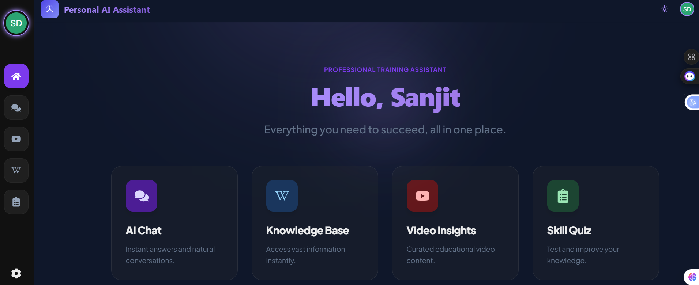

An AI-powered training assistant designed to provide smart conversations, educational resources, quizzes, and personalized learning support.
Personal AI Assistant (PAT) is an intelligent web platform created to help users learn, explore knowledge, and improve their skills through AI-powered interactions. The platform combines conversational AI, educational content, quizzes, and curated learning resources into a single experience.
The goal of the project was to build a modern assistant interface that feels interactive, fast, and helpful while maintaining a clean and professional user experience across devices.
The interface was designed with a professional and minimal layout to make learning more engaging and distraction-free. Large spacing, modern typography, and structured cards were used to improve readability and maintain visual consistency throughout the platform.
Responsive behavior was implemented to ensure smooth usability on mobile devices, tablets, and desktops without compromising the layout quality.
The project combines frontend interaction with backend AI integration to create a seamless assistant experience. Different modules such as AI chat, quizzes, and resource management were separated into scalable components for maintainability and future improvements.
The architecture also allows future expansion with features like authentication, personalized learning history, and advanced recommendation systems.
HTML, CSS, JavaScript, React, Node.js, Express.js, MongoDB, REST APIs, and AI integration tools.
This project improved my understanding of AI-based workflows, frontend architecture, API integration, responsive UI systems, and scalable full-stack development practices.
One of the biggest learnings was designing a clean user experience while managing multiple AI-driven functionalities inside the same platform.